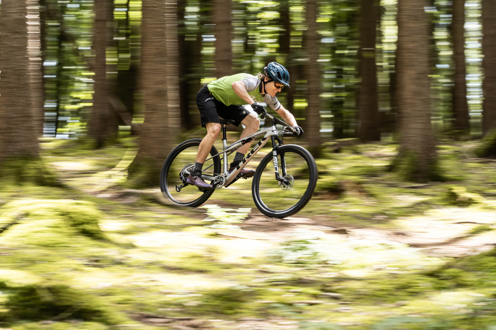

En MTB México, nos apasiona el mundo del Mountain Bike. Aquí encontrarás información sobre los mejores senderos, consejos para ciclistas, reseñas de equipos y mucho más. ¡Únete a nuestra comunidad y descubre la emoción del MTB en México!
Bienvenidos a MTB México
Bicicletas Eléctricas: La Revolución del MTB
Las bicicletas eléctricas, o e-MTB, están transformando el mundo del Mountain Bike. Con motores integrados que asisten al pedaleo, estas bicicletas permiten a los ciclistas conquistar terrenos más desafiantes, recorrer distancias más largas y disfrutar de la naturaleza sin límites.
¿Por qué elegir una e-MTB?
- Accesibilidad: Ideal para ciclistas de todos los niveles, desde principiantes hasta expertos.
- Mayor alcance: Recorre distancias más largas y explora senderos que antes parecían imposibles.
- Diversión sin límites: Disfruta de descensos emocionantes sin preocuparte por el agotamiento en las subidas.
- Tecnología avanzada: Motores silenciosos y baterías de larga duración que se integran perfectamente en el diseño.
Marcas líderes en e-MTB
Algunas de las marcas más reconocidas en el mundo de las bicicletas eléctricas son:
- Specialized: Con modelos como la Turbo Levo, combinan rendimiento y diseño innovador.
- Trek: La línea Rail ofrece una experiencia de conducción suave y potente.
- Haibike: Conocida por su tecnología Yamaha y diseños robustos.
- Giant: La Trance X E+ es una de las favoritas por su versatilidad.
Novedades en el mundo del MTB
El Mountain Bike está en constante evolución. Aquí algunas tendencias y avances recientes:
- Suspensión inteligente: Sistemas que ajustan automáticamente la suspensión según el terreno.
- Materiales ultraligeros: Marcos de fibra de carbono y aleaciones avanzadas para mayor ligereza y resistencia.
- Conectividad: Bicicletas con GPS integrado y apps para monitorear rutas y rendimiento.
- Diseños sostenibles: Marcas que apuestan por materiales reciclados y procesos eco-friendly.
Acerca de Nosotros
Somos un grupo de entusiastas del MTB que busca compartir nuestra pasión por este deporte. Nuestro objetivo es promover el ciclismo de montaña en México y ayudar a los ciclistas a encontrar los mejores lugares para practicarlo.
- Senderos recomendados
- Consejos para principiantes
- Eventos y competencias
Senderos Destacados
Aquí te presentamos algunos de los senderos más populares para practicar MTB en México:
- Chicoasén, Chiapas: Conocido por sus impresionantes vistas y rutas desafiantes.
- Huasca de Ocampo, Hidalgo: Ideal para principiantes y expertos.
- Valle de Bravo, Estado de México: Uno de los favoritos por su variedad de terrenos.
Videos de MTB
Mira algunos de nuestros videos más recientes: